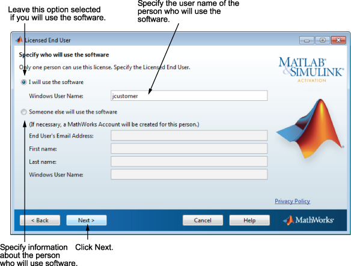

If you selected the Standalone Named User activation type, you must specify the operating system user name of the person who will use the software. The Standalone Named User activation type limits use of the software to a particular user on a particular computer. MathWorks® uses the operating system user name to identify this person. The operating system user name is the ID through which a user gains access to a computer. This ID is also known as the computer login name. To use the MathWorks software, you must be logged into the computer as the user name that you specify.
By default, the activation application fills in the user name of the person running the activation application. To accept this default, leave the I will use the software option selected and click Next. If you used your administrator account to install the software but will use another account to access the software, you can specify that user name here.
If you want to activate the license for someone else, select the Someone else will use the software option, specify their email address, name, and operating system user name, and click Next. The activation application looks for their MathWorks Account or creates an account for them. This option can be useful for system administrators activating the software for other users.
